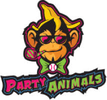

The Party Animals
The Party Animals are the original rivals of the Savannah Bananas, a touring exhibition baseball team known for their unapologetic showmanship and competitive edge in the "Banana Ball" format. Founded in 2020, they were designed to be the foil to the Bananas, embodying the "bad boys of baseball" persona with their high-energy antics and relentless pursuit of victory. With their own dedicated fanbase, "Party Animal Nation," they've become a central and beloved part of the Banana Ball universe.
The Baddest Boys of Baseball
The Party Animals were selected from a tryout process aimed at finding the "rowdiest guys in the land" who could play at the highest level. They embraced their role as the competitive counterpoint to the Bananas' entertainment-first style. This "brotherly rivalry" is a key part of the Banana Ball experience, creating some of the most memorable and intense moments on tour. The Party Animals have often dominated games, including a strong showing in 2025 where they frequently beat the Bananas at Grayson Stadium. Their on-field hijinks and viral moments have cemented their status as a fan favorite.
The Party Animals' unique blend of skill and showmanship extends to all aspects of the game. Players are known for their colorful hair, viral walk-ups, and playful antics, all while maintaining a high level of competitive play. The team features a mix of talented former professional and college players, including fan favorites like Tanner Thomas and former first-round MLB draft pick Jake Skole.
Touring the Country
Beyond their battles with the Bananas, the Party Animals have established themselves as a premier touring team. They participate in the Banana Ball World Tours, traveling to stadiums across the nation and performing for massive, sold-out crowds. In 2025, they completed a successful tour entertaining hundreds of thousands of fans with their electrifying "party" atmosphere. Their reputation for non-stop music, crazy stunts, and close fan interaction has earned them a massive social media following and widespread media attention.
Dominating the Game
With a roster built for competition and a flair for the dramatic, the Party Animals have often proven to be a dominant force in the Banana Ball league. They consistently challenge the Bananas and other rivals like the Firefighters and Texas Tailgaters, racking up impressive records and victories. For fans of hard-nosed, entertaining baseball with a wild streak, the Party Animals are the ultimate team.